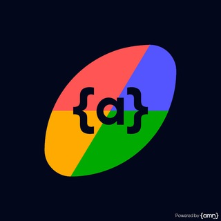

projetos_destacados

UnuRobot
Versão aprimorada do UnoRobot usando Hydrogram. Cartas personalizadas, regras customizáveis, empilhamento de cartas + e sistema de anúncio "uno".

LyricsPy
Bot/plugin para pesquisa de músicas no Telegram com integração Spotify e LastFM para sincronização de playlists e histórico.

UserLixo
Userbot completo para Telegram com múltiplas funcionalidades para automatizar e tornar as conversas mais interativas.